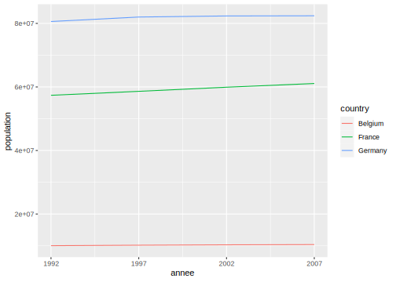

Partie 12 Mettre en ordre avec tidyr
12.1 Tidy data
Comme indiqué dans la section 6.3, les extensions du tidyverse comme dplyr ou ggplot2 partent du principe que les données sont “bien rangées” sous forme de tidy data.
Prenons un exemple avec les données suivantes, qui indique la population de trois pays pour quatre années différentes :
| country | 1992 | 1997 | 2002 | 2007 |
|---|---|---|---|---|
| Belgium | 10045622 | 10199787 | 10311970 | 10392226 |
| France | 57374179 | 58623428 | 59925035 | 61083916 |
| Germany | 80597764 | 82011073 | 82350671 | 82400996 |
Imaginons qu’on souhaite représenter avec ggplot2 l’évolution de la population pour chaque pays sous forme de lignes : c’est impossible avec les données sous ce format. On a besoin d’arranger le tableau de la manière suivante :
| country | annee | population |
|---|---|---|
| Belgium | 1992 | 10045622 |
| Belgium | 1997 | 10199787 |
| Belgium | 2002 | 10311970 |
| Belgium | 2007 | 10392226 |
| France | 1992 | 57374179 |
| France | 1997 | 58623428 |
| France | 2002 | 59925035 |
| France | 2007 | 61083916 |
| Germany | 1992 | 80597764 |
| Germany | 1997 | 82011073 |
| Germany | 2002 | 82350671 |
| Germany | 2007 | 82400996 |
C’est seulement avec les données dans ce format qu’on peut réaliser le graphique :
ggplot(d) +
geom_line(aes(x = annee, y = population, color = country)) +
scale_x_continuous(breaks = unique(d$annee))
C’est la même chose pour dplyr, par exemple si on voulait calculer la population minimale pour chaque pays avec summarise :
`summarise()` ungrouping output (override with `.groups` argument)# A tibble: 3 x 2
country pop_min
<fct> <int>
1 Belgium 10045622
2 France 57374179
3 Germany 8059776412.2 Trois règles pour des données bien rangées
Le concept de tidy data repose sur trois règles interdépendantes. Des données sont considérées comme tidy si :
- chaque ligne correspond à une observation
- chaque colonne correspond à une variable
- chaque valeur est présente dans une unique case de la table ou, de manière équivalente, des unités d’observations différentes sont présentes dans des tables différentes
Ces règles ne sont pas forcément très intuitives. De plus, il y a une infinité de manières pour un tableau de données de ne pas être tidy.
Prenons par exemple les règles 1 et 2 et le tableau de notre premier exemple :
| country | 1992 | 1997 | 2002 | 2007 |
|---|---|---|---|---|
| Belgium | 10045622 | 10199787 | 10311970 | 10392226 |
| France | 57374179 | 58623428 | 59925035 | 61083916 |
| Germany | 80597764 | 82011073 | 82350671 | 82400996 |
Pourquoi ce tableau n’est pas tidy ? Parce que si on essaie d’identifier les variables mesurées dans le tableau, il y en a trois : le pays, l’année et la population. Or elles ne correspondent pas aux colonnes de la table. C’est le cas par contre pour la table transformée :
| country | annee | population |
|---|---|---|
| Belgium | 1992 | 10045622 |
| Belgium | 1997 | 10199787 |
| Belgium | 2002 | 10311970 |
| Belgium | 2007 | 10392226 |
| France | 1992 | 57374179 |
| France | 1997 | 58623428 |
| France | 2002 | 59925035 |
| France | 2007 | 61083916 |
| Germany | 1992 | 80597764 |
| Germany | 1997 | 82011073 |
| Germany | 2002 | 82350671 |
| Germany | 2007 | 82400996 |
On peut remarquer qu’en modifiant notre table pour satisfaire à la deuxième règle, on a aussi réglé la première : chaque ligne correspond désormais à une observation, en l’occurrence l’observation de trois pays à plusieurs moments dans le temps. Dans notre table d’origine, chaque ligne comportait en réalité quatre observations différentes.
Ce point permet d’illustrer le fait que les règles sont interdépendantes.
Autre exemple, généré depuis le jeu de données nycflights13, permettant cette fois d’illustrer la troisième règle :
| year | month | day | dep_time | carrier | name |
|---|---|---|---|---|---|
| 2013 | 1 | 1 | 517 | UA | United Air Lines Inc. |
| 2013 | 1 | 1 | 533 | UA | United Air Lines Inc. |
| 2013 | 1 | 1 | 542 | AA | American Airlines Inc. |
| 2013 | 1 | 1 | 554 | UA | United Air Lines Inc. |
| 2013 | 1 | 1 | 558 | AA | American Airlines Inc. |
| 2013 | 1 | 1 | 558 | UA | United Air Lines Inc. |
| 2013 | 1 | 1 | 558 | UA | United Air Lines Inc. |
| 2013 | 1 | 1 | 559 | AA | American Airlines Inc. |
Dans ce tableau on a bien une observation par ligne (un vol), et une variable par colonne. Mais on a une “infraction” à la troisième règle, qui est que chaque valeur doit être présente dans une unique case : si on regarde la colonne name, on a en effet une duplication de l’information concernant le nom des compagnies aériennes. Notre tableau mêle en fait deux types d’observations différents : des observations sur les vols, et des observations sur les compagnies aériennes.
Pour “arranger” ce tableau, il faut séparer les deux types d’observations en deux tables différentes :
| year | month | day | dep_time | carrier |
|---|---|---|---|---|
| 2013 | 1 | 1 | 517 | UA |
| 2013 | 1 | 1 | 533 | UA |
| 2013 | 1 | 1 | 542 | AA |
| 2013 | 1 | 1 | 554 | UA |
| 2013 | 1 | 1 | 558 | AA |
| 2013 | 1 | 1 | 558 | UA |
| 2013 | 1 | 1 | 558 | UA |
| 2013 | 1 | 1 | 559 | AA |
| carrier | name |
|---|---|
| UA | United Air Lines Inc. |
| AA | American Airlines Inc. |
On a désormais deux tables distinctes, l’information n’est pas dupliquée, et on peut facilement faire une jointure si on a besoin de récupérer l’information d’une table dans une autre.
12.3 Les verbes de tidyr
L’objectif de tidyr est de fournir des fonctions pour arranger ses données et les convertir dans un format tidy. Ces fonctions prennent la forme de verbes qui viennent compléter ceux de dplyr et s’intègrent parfaitement dans les séries de pipes (%>%), les pipelines, permettant d’enchaîner les opérations.
12.3.1 pivot_longer : transformer des colonnes en lignes
Prenons le tableau d suivant, qui liste la population de 6 pays en 2002 et 2007 :
| country | 2002 | 2007 |
|---|---|---|
| Belgium | 10311970 | 10392226 |
| France | 59925035 | 61083916 |
| Germany | 82350671 | 82400996 |
| Italy | 57926999 | 58147733 |
| Spain | 40152517 | 40448191 |
| Switzerland | 7361757 | 7554661 |
Dans ce tableau, une même variable (la population) est répartie sur plusieurs colonnes, chacune représentant une observation à un moment différent. On souhaite que la variable ne représente plus qu’une seule colonne, et que les observations soient réparties sur plusieurs lignes.
Pour cela on va utiliser la fonction pivot_longer20 :
# A tibble: 12 x 3
country name value
<fct> <chr> <int>
1 Belgium 2002 10311970
2 Belgium 2007 10392226
3 France 2002 59925035
4 France 2007 61083916
5 Germany 2002 82350671
6 Germany 2007 82400996
7 Italy 2002 57926999
8 Italy 2007 58147733
9 Spain 2002 40152517
10 Spain 2007 40448191
11 Switzerland 2002 7361757
12 Switzerland 2007 7554661La fonction pivot_longer prend comme premier argument la liste des colonnes à rassembler (ici on a mis 2002 et 2007 entre backticks (`2002`) pour indiquer à pivot_longer qu’il s’agit d’un nom de colonne et pas d’un nombre). Ces colonnes peuvent être spécifiées avec la même syntaxe que celle de la fonction select de dplyr.
Par exemple, il est parfois plus rapide d’indiquer à pivot_longer les colonnes qu’on ne souhaite pas “rassembler”. On peut le faire avec la syntaxe suivante :
# A tibble: 12 x 3
country name value
<fct> <chr> <int>
1 Belgium 2002 10311970
2 Belgium 2007 10392226
3 France 2002 59925035
4 France 2007 61083916
5 Germany 2002 82350671
6 Germany 2007 82400996
7 Italy 2002 57926999
8 Italy 2007 58147733
9 Spain 2002 40152517
10 Spain 2007 40448191
11 Switzerland 2002 7361757
12 Switzerland 2007 7554661Par défaut, les colonnes qui contiennent les noms des colonnes d’origine et leurs valeurs sont nommées name et value. Si cela ne convient pas, on peut indiquer les noms à utiliser via les arguments names_to et values_to :
# A tibble: 12 x 3
country population annee
<fct> <chr> <int>
1 Belgium 2002 10311970
2 Belgium 2007 10392226
3 France 2002 59925035
4 France 2007 61083916
5 Germany 2002 82350671
6 Germany 2007 82400996
7 Italy 2002 57926999
8 Italy 2007 58147733
9 Spain 2002 40152517
10 Spain 2007 40448191
11 Switzerland 2002 7361757
12 Switzerland 2007 7554661Au final, la nom de pivot_longer s’explique par le fait qu’on fait “pivoter” notre tableau de départ d’un format “large” (avec plus de colonnes) vers un format “long” (avec plus de lignes).
12.3.2 pivot_wider : transformer des lignes en colonnes
La fonction pivot_wider est l’inverse de pivot_longer.
Soit le tableau d suivant :
| country | continent | year | variable | value |
|---|---|---|---|---|
| Belgium | Europe | 2002 | lifeExp | 78.320 |
| Belgium | Europe | 2002 | pop | 10311970.000 |
| Belgium | Europe | 2007 | lifeExp | 79.441 |
| Belgium | Europe | 2007 | pop | 10392226.000 |
| France | Europe | 2002 | lifeExp | 79.590 |
| France | Europe | 2002 | pop | 59925035.000 |
| France | Europe | 2007 | lifeExp | 80.657 |
| France | Europe | 2007 | pop | 61083916.000 |
Ce tableau a le problème inverse du précédent : on a deux variables, lifeExp et pop qui, plutôt que d’être réparties en deux colonnes, sont réparties entre plusieurs lignes.
On va donc utiliser pivot_wider pour répartir ces lignes dans deux colonnes différentes :
# A tibble: 4 x 5
country continent year lifeExp pop
<fct> <fct> <int> <dbl> <dbl>
1 Belgium Europe 2002 78.3 10311970
2 Belgium Europe 2007 79.4 10392226
3 France Europe 2002 79.6 59925035
4 France Europe 2007 80.7 61083916pivot_wider prend deux arguments principaux :
names_fromindique la colonne contenant les noms des nouvelles variables à créervalues_fromindique la colonne contenant les valeurs de ces variables
Il peut arriver que certaines variables soient absentes pour certaines observations. Dans ce cas l’argument values_fill permet de spécifier la valeur à utiliser pour ces données manquantes (par défaut les valeurs absentes sont, logiquement, indiquées par des NA).
Exemple avec le tableau d suivant :
| country | continent | year | variable | value |
|---|---|---|---|---|
| Belgium | Europe | 2002 | lifeExp | 78.320 |
| Belgium | Europe | 2002 | pop | 10311970.000 |
| Belgium | Europe | 2007 | lifeExp | 79.441 |
| Belgium | Europe | 2007 | pop | 10392226.000 |
| France | Europe | 2002 | lifeExp | 79.590 |
| France | Europe | 2002 | pop | 59925035.000 |
| France | Europe | 2007 | lifeExp | 80.657 |
| France | Europe | 2007 | pop | 61083916.000 |
| France | Europe | 2002 | density | 94.000 |
# A tibble: 4 x 6
country continent year lifeExp pop density
<chr> <chr> <dbl> <dbl> <dbl> <dbl>
1 Belgium Europe 2002 78.3 10311970 NA
2 Belgium Europe 2007 79.4 10392226 NA
3 France Europe 2002 79.6 59925035 94
4 France Europe 2007 80.7 61083916 NA# A tibble: 4 x 6
country continent year lifeExp pop density
<chr> <chr> <dbl> <dbl> <dbl> <dbl>
1 Belgium Europe 2002 78.3 10311970 0
2 Belgium Europe 2007 79.4 10392226 0
3 France Europe 2002 79.6 59925035 94
4 France Europe 2007 80.7 61083916 0Au final, la nom de pivot_wider s’explique par le fait qu’on fait “pivoter” notre tableau de départ d’un format “long” (avec plus de lignes) vers un format “large” (avec plus de colonnes).
12.3.3 separate : séparer une colonne en plusieurs colonnes
Parfois on a plusieurs informations réunies en une seule colonne et on souhaite les séparer. Soit le tableau d’exemple caricatural suivant, nommé df :
| eleve | note |
|---|---|
| Félicien Machin | 5/20 |
| Raymonde Bidule | 6/10 |
| Martial Truc | 87/100 |
separate permet de séparer la colonne note en deux nouvelles colonnes note et note_sur :
# A tibble: 3 x 3
eleve note note_sur
<chr> <chr> <chr>
1 Félicien Machin 5 20
2 Raymonde Bidule 6 10
3 Martial Truc 87 100 separate prend deux arguments principaux, le nom de la colonne à séparer et un vecteur indiquant les noms des nouvelles variables à créer. Par défaut separate “sépare” au niveau des caractères non-alphanumérique (espace, symbole, etc.). On peut lui indiquer explicitement le caractère sur lequel séparer avec l’argument sep :
# A tibble: 3 x 3
prenom nom note
<chr> <chr> <chr>
1 Félicien Machin 5/20
2 Raymonde Bidule 6/10
3 Martial Truc 87/10012.3.4 separate_rows : séparer une colonne en plusieurs lignes
separate_rows est également utile quand plusieurs informations différentes ont été réunies dans une seules colonne. Contrairement à separate, elle ne répartit les différentes valeurs dans plusieurs colonnes, mais dans plusieurs lignes.
Prenons l’exemple suivant, ou la colonne notes contient plusieurs notes séparées par des virgules :
| eleve | classe | notes |
|---|---|---|
| Félicien Machin | 6e | 5,16,11 |
| Raymonde Bidule | 5e | 15 |
| Martial Truc | 6e | 11,17 |
Si on applique separate_rows à la colonne notes, chaque note se retrouve dans une ligne différente (et les autres colonnes sont dupliquées) :
# A tibble: 6 x 3
eleve classe notes
<chr> <chr> <chr>
1 Félicien Machin 6e 5
2 Félicien Machin 6e 16
3 Félicien Machin 6e 11
4 Raymonde Bidule 5e 15
5 Martial Truc 6e 11
6 Martial Truc 6e 17 Par défaut separate_rows sépare les valeurs dès qu’elle trouve un caractère qui ne soit ni un chiffre ni une lettre, mais on peut spécifier le séparateur à l’aide de l’argument sep (qui accepte une chaîne de caractère ou même une expression régulière) :
12.3.5 unite : regrouper plusieurs colonnes en une seule
unite est l’opération inverse de separate. Elle permet de regrouper plusieurs colonnes en une seule. Imaginons qu’on obtient le tableau d suivant :
| code_departement | code_commune | commune | pop_tot |
|---|---|---|---|
| 01 | 004 | Ambérieu-en-Bugey | 14233 |
| 01 | 007 | Ambronay | 2437 |
| 01 | 014 | Arbent | 3440 |
| 01 | 024 | Attignat | 3110 |
| 01 | 025 | Bâgé-la-Ville | 3130 |
| 01 | 027 | Balan | 2785 |
On souhaite reconstruire une colonne code_insee qui indique le code INSEE de la commune, et qui s’obtient en concaténant le code du département et celui de la commune. On peut utiliser unite pour cela :
# A tibble: 6 x 3
code_insee commune pop_tot
<chr> <chr> <int>
1 01_004 Ambérieu-en-Bugey 14233
2 01_007 Ambronay 2437
3 01_014 Arbent 3440
4 01_024 Attignat 3110
5 01_025 Bâgé-la-Ville 3130
6 01_027 Balan 2785Le résultat n’est pas idéal : par défaut unite ajoute un caractère _ entre les deux valeurs concaténées, alors qu’on ne veut aucun séparateur. De plus, on souhaite conserver nos deux colonnes d’origine, qui peuvent nous être utiles. On peut résoudre ces deux problèmes à l’aide des arguments sep et remove :
# A tibble: 6 x 5
code_insee code_departement code_commune commune pop_tot
<chr> <chr> <chr> <chr> <int>
1 01004 01 004 Ambérieu-en-Bugey 14233
2 01007 01 007 Ambronay 2437
3 01014 01 014 Arbent 3440
4 01024 01 024 Attignat 3110
5 01025 01 025 Bâgé-la-Ville 3130
6 01027 01 027 Balan 278512.3.6 extract : créer de nouvelles colonnes à partir d’une colonne de texte
extract permet de créer de nouvelles colonnes à partir de sous-chaînes d’une colonne de texte existante, identifiées par des groupes dans une expression régulière.
Par exemple, à partir du tableau suivant :
| eleve | note |
|---|---|
| Félicien Machin | 5/20 |
| Raymonde Bidule | 6/10 |
| Martial Truc | 87/100 |
On peut extraire les noms et prénoms dans deux nouvelles colonnes avec :
# A tibble: 3 x 3
prenom nom note
<chr> <chr> <chr>
1 Félicien Machin 5/20
2 Raymonde Bidule 6/10
3 Martial Truc 87/100On passe donc à extract trois arguments : la colonne d’où on doit extraire les valeurs, un vecteur avec les noms des nouvelles colonnes à créer, et une expression régulière comportant autant de groupes (identifiés par des parenthèses) que de nouvelles colonnes.
Par défaut la colonne d’origine n’est pas conservée dans la table résultat. On peut modifier ce comportement avec l’argument remove = FALSE. Ainsi, le code suivant extrait les initiales du prénom et du nom mais conserve la colonne d’origine :
# A tibble: 3 x 4
eleve initiale_prenom initiale_nom note
<chr> <chr> <chr> <chr>
1 Félicien Machin F M 5/20
2 Raymonde Bidule R B 6/10
3 Martial Truc M T 87/10012.3.7 complete : compléter des combinaisons de variables manquantes
Imaginons qu’on ait le tableau de résultats suivants :
| eleve | matiere | note |
|---|---|---|
| Alain | Maths | 16 |
| Alain | Français | 9 |
| Barnabé | Maths | 17 |
| Chantal | Français | 11 |
Les élèves Barnabé et Chantal n’ont pas de notes dans toutes les matières. Supposons que c’est parce qu’ils étaient absents et que leur note est en fait un 0. Si on veut calculer les moyennes des élèves, on doit compléter ces notes manquantes.
La fonction complete est prévue pour ce cas de figure : elle permet de compléter des combinaisons manquantes de valeurs de plusieurs colonnes.
On peut l’utiliser de cette manière :
# A tibble: 6 x 3
eleve matiere note
<chr> <chr> <dbl>
1 Alain Français 9
2 Alain Maths 16
3 Barnabé Français NA
4 Barnabé Maths 17
5 Chantal Français 11
6 Chantal Maths NAOn voit que les combinaisons manquante “Barnabé - Français” et “Chantal - Maths” ont bien été ajoutées par complete.
Par défaut les lignes insérées récupèrent des valeurs manquantes NA pour les colonnes restantes. On peut néanmoins choisir une autre valeur avec l’argument fill, qui prend la forme d’une liste nommée :
# A tibble: 6 x 3
eleve matiere note
<chr> <chr> <dbl>
1 Alain Français 9
2 Alain Maths 16
3 Barnabé Français 0
4 Barnabé Maths 17
5 Chantal Français 11
6 Chantal Maths 0Parfois on ne souhaite pas inclure toutes les colonnes dans le calcul des combinaisons de valeurs. Par exemple, supposons qu’on rajoute dans notre tableau une colonne avec les identifiants de chaque élève :
| id | eleve | matiere | note |
|---|---|---|---|
| 1001001 | Alain | Maths | 16 |
| 1001001 | Alain | Français | 9 |
| 1001002 | Barnabé | Maths | 17 |
| 1001003 | Chantal | Français | 11 |
Si on applique complete comme précédemment, le résultat n’est pas bon car il contient toutes les combinaisons de id, eleve et matiere.
# A tibble: 18 x 4
id eleve matiere note
<dbl> <chr> <chr> <dbl>
1 1001001 Alain Français 9
2 1001001 Alain Maths 16
3 1001001 Barnabé Français NA
4 1001001 Barnabé Maths NA
5 1001001 Chantal Français NA
6 1001001 Chantal Maths NA
7 1001002 Alain Français NA
8 1001002 Alain Maths NA
9 1001002 Barnabé Français NA
10 1001002 Barnabé Maths 17
11 1001002 Chantal Français NA
12 1001002 Chantal Maths NA
13 1001003 Alain Français NA
14 1001003 Alain Maths NA
15 1001003 Barnabé Français NA
16 1001003 Barnabé Maths NA
17 1001003 Chantal Français 11
18 1001003 Chantal Maths NADans ce cas, pour signifier à complete que id et eleve sont deux attributs d’un même individu et ne doivent pas être combinés entre eux, on doit les placer dans une fonction nesting :
# A tibble: 6 x 4
id eleve matiere note
<dbl> <chr> <chr> <dbl>
1 1001001 Alain Français 9
2 1001001 Alain Maths 16
3 1001002 Barnabé Français NA
4 1001002 Barnabé Maths 17
5 1001003 Chantal Français 11
6 1001003 Chantal Maths NA12.4 Ressources
Chaque jeu de données est différent, et le travail de remise en forme est souvent long et plus ou moins compliqué. On n’a donné ici que les exemples les plus simples, et c’est souvent en combinant différentes opérations qu’on finit par obtenir le résultat souhaité.
Le livre R for data science, librement accessible en ligne, contient un chapitre complet sur la remise en forme des données.
L’article Tidy data, publié en 2014 dans le Journal of Statistical Software, présente de manière détaillée le concept éponyme (mais il utilise des extensions désormais obsolètes qui ont depuis été remplacées par dplyr ettidyr).
Le site de l’extension est accessible à l’adresse : https://tidyr.tidyverse.org/ et contient une liste des fonctions et les pages d’aide associées.
pivot_longeretpivot_wideront été introduites dans la version 1.0 detidyr. Elles ont alors remplacégatheretspread.↩